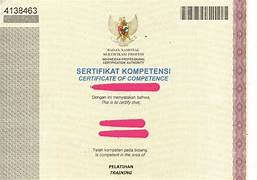

Visi - Misi
- Visi
- "Terwujudnya Fakultas Ilmu Komputer Universitas Kuningan sebagai fakultas andal yang unggul dalam penyelenggaraan Tri Darma Perguruan Tinggi di Wilayah Jawa Barat pada tahun 2032"
- Misi
-
- Menyelenggarakan pendidikan, penelitian, dan pengabdian pada masyarakat secara terpadu berdasarkan pada kaidah-kaidah pendidikan modern.
- Membina dan mengembangkan kehidupan akademik yang sehat sesuai dengan nilai-nilai dan norma-norma yang berkembang di dunia akademik.
- Menyelenggarakan riset-riset ilmiah yang tidak saja mampu mendorong pertumbuhan ilmu dan teknologi, tetapi juga dapat menjamin kebutuhan dunia industri dan bisnis yang berkembang sangat pesat dewasa ini.
- Menjadi sarana terjadinya pertemuan-pertemuan ilmiah baik lingkup lokal maupun nasional sehingga dapat memberikan warna dan kontribusi yang nyata dalam kemajuan ilmu dan teknologi.
- Melayani, memandu, dan menyatu dengan masyarakat dalam upaya ikut serta mewujudkan masyarakat baru Indonesia yang adil dan makmur.
- Menjadi sarana penggodokan generasi muda sehingga mampu mandiri, profesional, dan berakhlak mulia yang bermanfaat bagi dirinya, masyarakat, bangsa, dan negara.
- Meningkatkan budaya baca dalam upaya mewujudkan generasi yang memiliki wawasan yang luas dalam bidang IPTEK sesuai dengan minat kajiannya.
VISI
Terwujudnya program studi sistem informasi sebagai program studi yang handal dan unggul dalam penyelenggaraan Tri Darma Perguruan Tinggi, unggul di bidang rekayasa sistem informasi di Wilayah Jawa Barat pada tahun 2032.
PROFIL LULUSAN & PILIHAN KARIR
System Analyst, Data Analyst, Chief Information Officer (CIO), Software Quality Assurance.
KEGIATAN MBKM
- Magang
- Studi Independen
- Bangkit Academy
- Pertukaran Mahasiswa Merdeka (PMM) Nusantara
- International Credit Transfer (ICT)
PROGRAM UNGGULAN
- Pertukaran Mahasiswa ke University Utara Malaysia (UUM)
- Praktisi/Dosen Kompetensi dari Universitas lain
PRESTASI MAHASISWA
- Juara 1 Lomba Desain Cindramata 2018
- Juara Favorit lomba poster STIKKU 2017
- Mahasiswa Berprestasi UNIKU 2022
- Duta Putra Sosial Kuningan 2022
- Juara Lomba LLDIKTI Konsep Garapan Terbaik Tingkat Jabar-Banten 2022
- PPK Ormawa
SERTIFIKASI
| No. | Nama | Homebase | Rumpun Keilmuan |
|---|---|---|---|
| 1. | Tito Sugihart, M.Eng. | Teknik Informatika | Computer Engineering |
| 2. | Erik Kurniadi, M.Kom. | Sistem Informasi | Information System |
| 3. | Jerry D. Rahajaaan, M.Sn. | Desain Komunikasi Visual | Seni, Desain, & Media |
| 4. | Panji Novanrara, M.T. | Teknik Informatika | Computer Science |
| 5. | Panji Novanrara, M.T. | Teknik Informatika | Teknik Sipil |